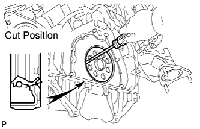

REAR CRANKSHAFT OIL SEAL > REMOVAL |
| 1. DISCONNECT CABLE FROM NEGATIVE BATTERY TERMINAL |
| 2. REMOVE AUTOMATIC TRANSMISSION ASSEMBLY |
Remove the automatic transmission (Click here).
| 3. REMOVE DRIVE PLATE AND RING GEAR SUB-ASSEMBLY |
 |
Using SST, hold the crankshaft damper.
 |
Remove the 8 bolts, front drive plate spacer, drive plate and rear drive plate spacer.
| 4. REMOVE ENGINE REAR OIL SEAL |
 |
Using a knife, cut off the lip of the oil seal.
Using a screwdriver, pry out the oil seal.